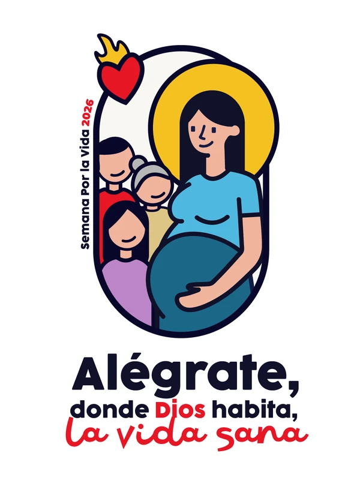

RealizadoRealizadoCampaña · Familia
Semana por la Vida 2026
20.ª edición, según la CEV, de la semana de oración y formación en defensa de la vida humana, con el tema «Alégrate, donde Dios habita, la vida sana».

Datos del evento
- Fecha
- Del 19 al 25 de marzo de 2026
- Hora
- No publicada en las notas oficiales.
- Modalidad y lugar
- Virtual y presencial · Virtual (Zoom y YouTube) y parroquias de todo el país
- Organiza
- Área de Familia y Vida del Centro de Laicos, Familia y Juventud, del SPEV de la Conferencia Episcopal Venezolana
- Estado
- Realizado
Cómo fue
La Semana se inspira en el «Sí» de María y busca defender y valorar la vida humana desde la familia. Tuvo tres encuentros virtuales de formación para agentes de pastoral y un subsidio con materiales: Rosario por la Vida, oración a san José y una propuesta de Hora Santa.
Según la nota de cierre, en las diócesis hubo bendiciones de vientres, jornadas de oración y caminatas por la vida a nivel parroquial.
Qué se hizo
- Jueves 12 de marzo: «Emociones, espiritualidad y acompañamiento en el inicio de la vida: dos mujeres, dos historias», con un sacerdote jesuita.
- Miércoles 18 de marzo: «Maternidad, Vida y Misión», con una psicóloga clínica, según la crónica del 20 de marzo. La convocatoria atribuía esta charla a otro ponente.
- Miércoles 25 de marzo: formación de cierre.
- Subsidio con Rosario por la Vida, oración a san José y propuesta de Hora Santa.
- Estreno del canal de YouTube «Área de Familia y Vida» (18 de marzo), donde quedan las formaciones.
Quién participó
Solo cargos públicos. Los nombres de laicos participantes y de menores no se publican.
- El equipo de coordinación del Área de Familia y Vida del Centro.
- Ponentes invitados y agentes de pastoral de arquidiócesis y diócesis.
Cifras
- Alrededor de cien personas en la primera formación, hasta el tope de la sala de Zoom, según la nota de la CEV del 13 de marzo de 2026.
Galería

Logotipo de la Semana por la Vida 2026: una madre embarazada con su familia y el lema Alégrate, donde Dios habita, la vida sana.. Crédito: Centro de Laicos, Familia y Juventud, CEV.
Fuentes
- Balance oficial: 20 años defendiendo la esperanza y la unidad familiar (nota de la CEV del 27 de marzo de 2026)
- Convocatoria oficial (nota de la CEV del 2 de marzo de 2026)
- Primera formación (nota de la CEV del 13 de marzo de 2026)
- Segunda formación (nota de la CEV del 20 de marzo de 2026)
- Subsidio Semana por la Vida 2026 (PDF, unos 7,9 MB)